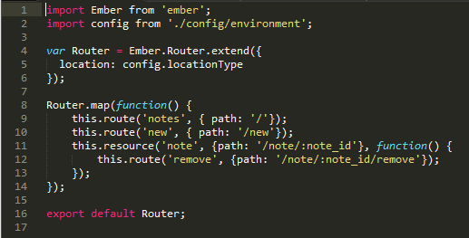
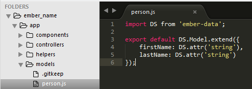
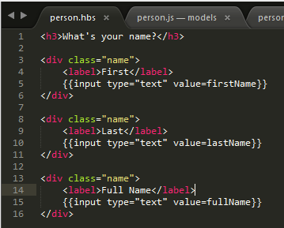

Ember Fundamentals
An Introduction to Ember.js
What is it?
-
" A framework for creating ambitious web applications" - Emberjs.com
- Originally created by Yehuda Katz, now an open source project with a core team of 14 members
-
Under very active development.
- Version 2.0 released August 13, 2015
-
Focal Points:
- Handlebars Templates
- Convention over configuration
- Promises are treated as 1st-class citizens
- Integrated testing and deployment tools via Ember-CLI
Basic Building Blocks
Ember is an MVC framework.
- Router - Maps the requested URL to a route
- Route - Renders a template and loads a model
- Template - Handlebars template with two-way binding to model
- Model - Represents persistent data
- Component - App-specific HTML tag, easily-reusable "partial" view
- Controller - Go-between for model and template, contains actions
Project Structure
Ember relies heavily on convention, and project structure is an important aspect of that
- Ember code is written in ES2015 syntax as modules
- Ember automatically resolves these modules as needed, so it has to know where to find it
- A newly generated Ember project will have these directories:
- Components
- Controllers
- Helpers
- Models
- Routes
- Styles
- Templates
- For example, if you have a URL in your project that looks like "/posts/new", you would have a folder in your routes directory named "posts" and a file within that directory named "new.js"
The Flow of Data

Routing
A single router.js at the root of your project provides all of the URL routing in an Ember app:
Models
Ember has two distinct types of "models"
- The first is a definition of the data used by the app (your persistent data)
This is essentially a model definition
Models
Ember has two distinct types of "models"
- The second is the data returned from a Route, which is used by the Controller to render the Template
Routes
- Routes respond to each of the route definitions in your app's router.js
- Responsible for providing the Controller with a model
- Ideal place for retrieving data from your persistence layer
- Like all other objects in Ember, defined using extend:
- export default Ember.Route.extend()
- Routes are mandatory
Controllers
- Live in the controllers folder
- Provides an excellent place for values needed to support your View/Template
- A count, total, sum, etc. for a collection in your model
- Flags that determine if certain portions of your template should be toggled (showDetails, hidden, etc.)
- Templates recognize actions hash on controllers as handlebars expression functions
Templates
Templates are essentially the Handlebars files representing your UI, so they serve as the View portion of MVC in Ember.
Adapters
- Ember uses adapters to make data store management easier
- RESTAdapter is the default (uses JSON API)
-
Calling functions on this.store in your route will call your API
using naming conventions to determine the route URL:
- this.store.findRecord('post', 1) becomes an AJAX GET request to /posts/1
- Adapters can be swapped out just by changing what's extended
- Adapters exist for local storage, test fixture data, Solr, CouchDB, and many more
Ember CLI
- Ember App Kit is no longer supported
- Ember CLI is the new, simpler way of creating Ember apps
- It makes your life just a little bit easier...
- Generates folder structure
- Has generators for all aspects of an Ember app (controllers, routes, etc.)
- Includes a server that hosts the app and monitors your code for changes
- Allows you to build your app for a specific environment
- Runs your tests